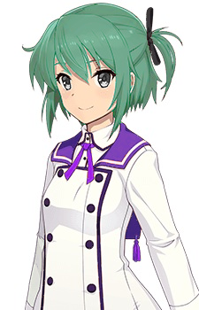
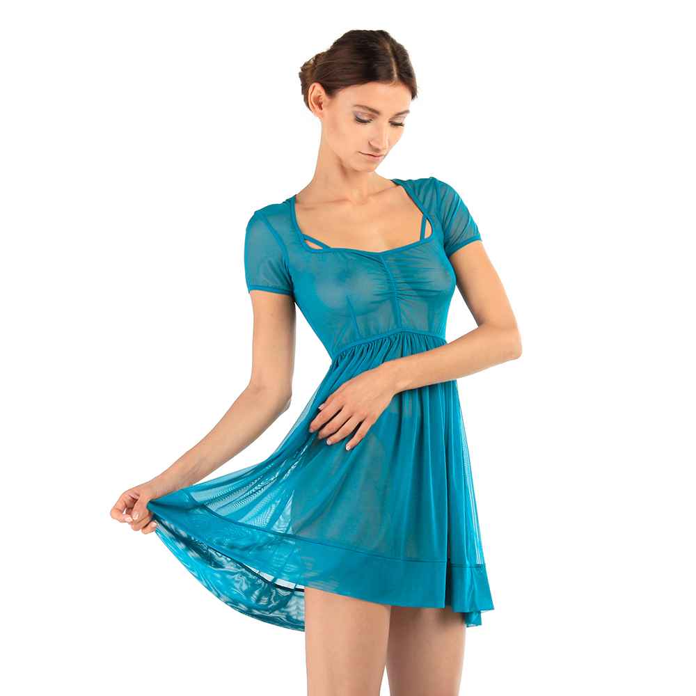
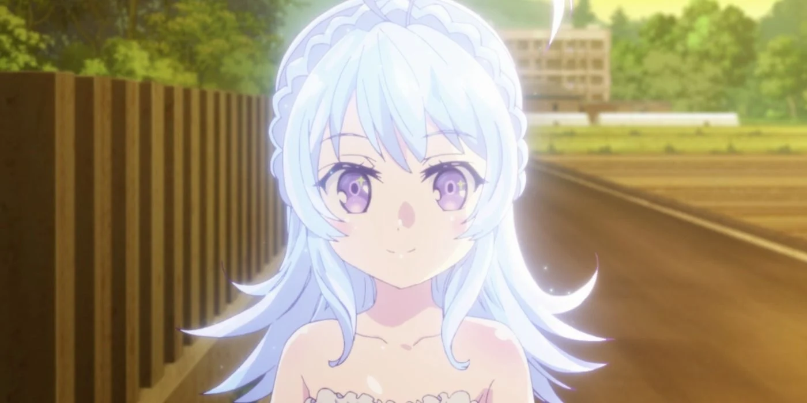

Molva Iselle
| Name |
Molva Iselle |
| Codename |
Blue Otter |
| Nicknames |
Isa (by Molva Atris) |
| Species |
Human (Maiden) |
| Gender |
Female |
| Handedness |
Right |
| Birthday |
7:16:10 Brilia 091999.281 (age 14) |
| Hometown |
Hollen, Clerèssia |
| Current Residence |
Irèle, Clerèssia |
| Occupation |
Student |
| Current Affiliation(s) |
Team MAGI
Irèle High School (class 1-2) |
| Previous Affiliation(s) |
Hollen Middle School |
| Family |
Molva Natalia (older sister)
Molva Atris (older brother)
unnamed parents |
| Height |
156 cm (5'1.4") |
| Weight |
47 kg (104 lb) |
| B/W/H |
|
| Hair |
Blue-green, shoulder-length |
| Eyes |
Silver |
| Weapon |
?? (staff)
?? (dagger) |
| Keystone |
Silver butterfly pendant necklace with amethyst gemstone |
| Specialty |
Support |
| Element |
Water |
| Rank |
B+ |
Iselle is a bundle of energy. She has always had a very close relationship with her
brother growing up, and they are both eager to reconnect after the year they were apart going to schools
in different cities; by contrast, her older sister has always distanced
herself from the two, especially given the large age gap between them. Despite this, Iselle admires and respects
her sister's dedication despite her relative unpopularity.
When Amara Minori learns that Iselle has untapped and previously-unknown
magical abilities, she quickly tells
her in order to prevent the younger girl from the confusion and fear that she'd experienced in unlocking her own
powers.
She is motivated by honor, loyalty, and friendship, and she is drawn to Minori's duty to protect those less
powerful than herself. Her goal is to bring happiness to as many people as she possibly can.
Appearance
When not wearing the Irèle High School uniform, she prefers to wear cute or otherwise fashionable outfits, and
she puts a noticeable effort into her appearance.
Gown
Her magical Gown consists of a translucent teal-blue dress atop a white strapless bandeau bra and shorts. The
dress's
skirt reaches to her mid-thigh, colored with streaks of lighter blues and whites that give the garment a sense
of depth and motion; the underworn shorts come a few centimeters short of the skirt's hem. During her full
transformation, her hair shimmers, turning from its normal blue-green to a bright, pale blue, though she can
repress this effect as well.
Relationships
Family
Iselle has two older siblings: Natalia (sister) and Atris (brother). Natalia was eleven when Iselle was born,
and this age gap was difficult for the sisters to overcome, which wasn't aided by Natalia's general lack of
interest in fostering relationships with her family. In fact, Natalia's success at nearly everything she touched
made it impossible for Iselle to follow in her footsteps, an expectation unfairly leveled at her by her parents
and other family members (apart from Atris, who was generally exempted from these comparisons on account of
being a boy). In Atris's words:
[Iselle's] fourteen, but since Natalia-ren's so much older, our parents tend to forget that she's not, like, six
by comparison. As the two girls, they get compared a lot, something I was lucky enough to avoid most of the
time. Natalia-ren set the bar so impossibly high in so many ways, and being held to those same standards, even
as an anchor, has been really hard on Isa. Especially when she gave up trying to follow in her footsteps and
just become her own person. [...T]here's always been a tension between her and Natalia-ren, though Isa usually
tries to downplay it. She won't admit it, but now that she has the option not to be home for Natalia-ren's
birthday—a celebration of the unchosen rival she could never hope to beat—she's definitely excited to take it.
(Chapter V).
By contrast, Iselle describes her and Atris as "inseparable"; Atris calls them "undeniably close" and calls
Iselle his “best friend”. This likely stems from Atris's favorable treatment of her growing up in a home that
wasn't always as welcoming as she might have preferred.
No specific information is known about her parents or other family beyond what can be inferred via her
relationship with Natalia.
Friends
Team MAGI
Maiden Abilities
| HP |
ATK |
MGK |
DEF |
RES |
SPE |
OVERALL |
| B |
C+ |
B- |
A- |
A |
B |
B+ |
As a Maiden, she specializes in support (ally buff/enemy debuff) and healing, preferring to attack from a
distance. She struggles in close-range/melee combat, though she can use her staff as a makeshift shield against
some attacks, and she carries a small dagger in the left boot of her Gown. Though she specializes in support,
she also possesses relatively strong offensive magic as well, though it exhausts her comparatively quickly.
Known Spells
|
activate her powers and transformation |
| Echoes |
boost the magical strength and rate of mana regeneration for herself or a nearby ally |
| Sension |
??? |
Trivia
-
Her family name comes from the Russian word королева
, meaning "queen". She controls water magic, so there is a loose association chain between
water → rain → reign (homophone) → queen.
-
Her given name is of unknown origin.(Source)
but could be related to names such as Isabelle. It resembles the name of Isolde Ennets, deuteragonist of
Elena, another of Lily Ellington's books. In particular, both characters are deuteragonists who share
the nickname Isa. That Iselle's family name is a corruption of "queen" is also a reference to Isolde being a
princess of her home nation.
-
Her favorite animal is the otter, a fact alluded to by her codename.
-
Character appearance references:
- Her general appearance is inspired by this
recolored image of
Etou Kanami from the anime
Toji no Miko.
(Original
Image)

-
Her Gown is inspired by this
dress, sold here.
Obviously, that's a lot more translucent than Iselle could wear on its own (which bespeaks its
existence as lingerie), hence the white bra and shorts. Her dress's skirt reaches just past her
mid-thigh (which is a bit longer than in the reference image).
- The way her hair shimmers in her transformation is reminiscent of Chikama Yashiro's from the anime Adachi to
Shimamura, though not as vibrant.
-
Origin of spell names:
-
Echoes — refers to the amplification or reduplication of the magical energy caused by the
spell,
much as a sonic echo is a reduplication of sound waves. The name also references the Healing
Echo
class of skills known by Jessica
Philomele in
Mana Khemia: Alchemists of Al-Revis
. As the names suggest, Healing Echo are healing skills, allowing Jess to restore her
party members' HP in battle or in the field, rather than MGK boosting skills (as is Boost:
ATK+/MGK+). It is, perhaps, worth noting that Jess is contracted with the Mana of Wind, rather than
water—no Mana of Water appears in the game.
-
Sension — It phonetically resembles the Japanese word 船長
("captain [of a ship]"). Sino-Japanese kanji readings give 千
("thousand": 二千
= 2000, etc.) and 鳥
("bird"); however, these have native readings of 千
and 鳥
, respectively. These two kanji form the word 千鳥
("thousand birds"), which is a name that appears throughout Japanese literature and
drama, including as the name of Etou Kanami's okatana in Toji no Miko. This also ties a loose
wind-element reference (birds∼wind), fitting the fact that this spell is taught to her by Aya.
{kind=link}
{kind=link}
{kind=link}